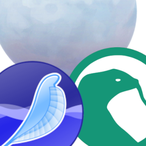
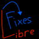

Firefox profile
Seamonkey / Thunderbird profile
YT short redirect normal video
Redirect YouTube Shorts Videos to original YouTube video
player, and hides short on everything except channel page.
Duckduckgo searchbox extension
Adds a popup search box for duckduckgo, letting you search
without opening a new tab or removing your current one. When you
search it auto opens a new tab when you hit enter.

uBlock Origin xul updated

An efficient blocker. Easy on CPU and memory.
Ublock origin rebuilt by me, using ublock legacy source code. New and updated filter list added.

Better h264ify
Adds some new stuff to h264ify and remove chrome specific
settings that don't work on firefox

View Github Notifications in add-on bar
Lets you View Github Notifications in add-on bar with just a
click.

Libre Fixes JS
A collection of work-around scripts for a few different
websites that are impossible to use without non-free JavaScript.
Goes with Libre JS.

Addons button for xul
In modern firefox you can click the add-ons button to view and configure your add-ons. This does not happen. It just takes you to the page and removes your current tab. This add-on can view and configure your add-ons without leaving the tab.
Display mail user agent legacy
Let's you see what mail client someone sent you an email from, with back ported fetures from newer version to work on Seamonkey.

Thunderbird Weather
See weather in thunderbird, in a native feeling way.
Location issue is know
Can you donate to support the work of these add-ons?